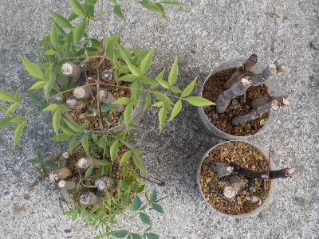
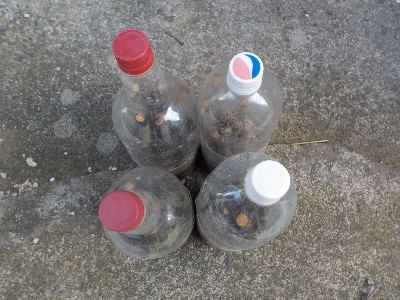
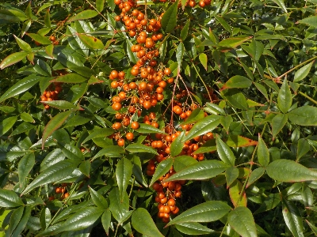
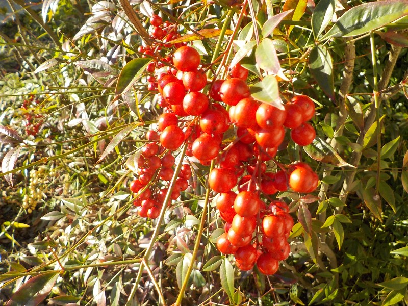
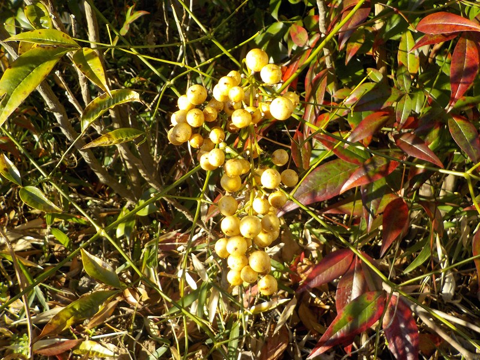
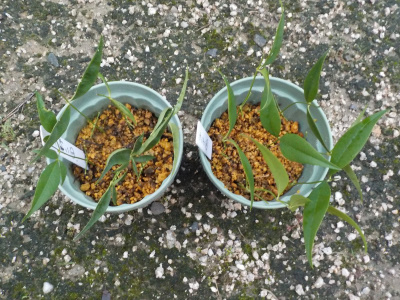
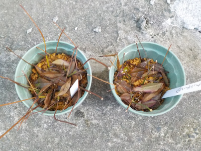
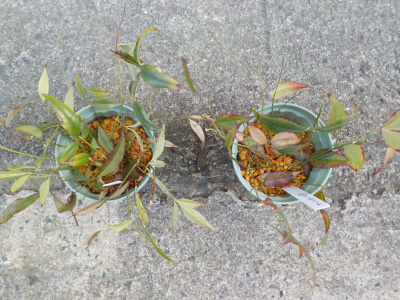

遊びで植物を育てよう
2025/07/25
紅白の南天が欲しかったんですが、赤だけ生き残りました。

紅白の南天を並べて置きたいと思い挿し木したんですけど、白い実の南天は全滅しました。
白は弱いんだ。
とりあえず赤を2本育てて、白は来年また挿し木しようかな。
種蒔きは何色になるかわからないので、やらない方がいいんだろうな。
【南天TOP】
【木TOP】
【園芸TOP】
2025/02/11
ペットボトルで南天の挿し木を始めました。

南天の実がなくなったので挿し木しました。
まだ寒いかなと思いペットボトルを使って密閉挿しにしました。たぶん寒さ対策になるでしょう。
南天の木が大きく穂木が沢山出来たため、計20本挿し木しました。何本成功するかな？
【南天TOP】
【木TOP】
【園芸TOP】
2024/11/10
南天の実が朱色になりました。

もうちょっとで赤くなりますね。
年末が近づいてきている気がする。年末だからって何かをする訳ではないんですが、なんかあせります。
【南天TOP】
【木TOP】
【園芸TOP】
2024/02/17
南天の実が沢山残っています。

まだ実が沢山あります。
実が落ちたら剪定するつもりです。

去年は白い南天を沢山切ったので、今年は白い実が少なかったです。紅白のバランスを考えて剪定出来るといいかな。
【南天TOP】
【木TOP】
【園芸TOP】
2023/07/09
南天の挿し木は木の太い部分を使うんですね。

葉っぱの先端部分を使って南天の挿し木をしたんですが、これって間違いみたいです。
だから前回失敗したんだ。
木の幹の太いところを使うようです。ちゃんと調べてからやらないといけませんね。
【南天TOP】
【木TOP】
【園芸TOP】
2023/05/01
挿し木の南天は葉っぱが全部落ちました。

葉っぱが落ちたってことは枯れたってことかな。
沢山やったのに全滅は残念だ。
【南天TOP】
【木TOP】
【園芸TOP】
2023/04/09
南天の挿し木をしました。

南天の剪定をしました。
鉢植えの南天を1つ作りたいと思ったので、切った枝を使って挿し木しました。
【南天TOP】
【木TOP】
【園芸TOP】
北東に置くといいみたいです。
【おいしいものを食べよう。】【たくさん寝よう。】
【ソロ活をしよう!】【季節感のあることをしよう。】【動画視聴はほどほどに。】【当サイトの全てのコンテンツは無断転載禁止です。】